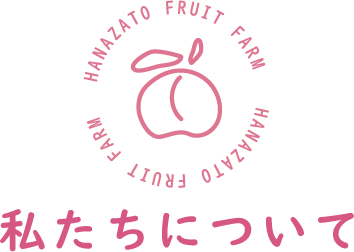

支えられて60年、飯坂町の桃果樹園
花里果樹園は私たち4人家族で経営する小さな農園です。
初代・花里一郎から始まり、3代目、花里もも子が当園の代表を務めております。
飯坂町の小さな山の一部をを切り開いて始めた農園は、
福島の肥沃な大地の恵み、湿度に恵まれた気候、
そして何より、お客様に支えられ続けて60年が経ちました。
私たちは、お客様に感謝の気持ちを「おいしさ」にのせてお届けできるよう、
愛情を込めて桃の生産を行っております。
ぜひ当園にお越しいただき、花里の桃をお楽しみください。
01
栽培
当園では、福島の山から降りてくる
栄養たっぷりな土が、桃においしさを運んでくれます。
また、農薬も不使用のため、
安心して召し上がることができます。
02
収穫
お客様に１番おいしい状態の
桃をお届けするために、熟成一歩手前の状態で、
１つ１つ丁寧に収穫します。
03
保存・発送
熟成一歩手前の桃は、風通しの良い、
温度を一定に保った納屋で保存します。
桃は傷一つつけないように細心の注意を払って包装し、
お客様のもとへお届けします。
花里 もも子
みなさまこんにちは。桃果樹園うまれで桃果樹園育ち。
そして桃農園働きの花里もも子です。
人生は桃と共に！をもっとうに桃太郎以上に桃つながりが強い？
桃大好きな園長です。
これからも皆様の笑顔を作れるよう家族全員で頑張ります。
花里 一郎
(先代(2代目)代表)皆様こんにちは。初代・花里十兵衛から引き継いだ
花里果樹園は、これまでたくさんのお客様に支えられ、
60年以上続けることができました。
これからも是非とも、
当園にお立ちよりいいただければ幸いです。
これからも元気に、おいしい桃を育てていきます。
花里 太郎
皆さん初めまして。
花里果樹園のホームページをご覧いただき、
誠にありがとうございます。
桃農家を始めてから7年。大変なこともありますが、
１つ１つ丁寧に育てた桃を食べてくださる皆さんの笑顔が
これ以上にない喜びです。
花里 清美
花里果樹園にお立ち寄りの皆様、
日頃より当園にお立ち寄りいただき、誠に感謝申し上げます。
お客様との素晴らしいご縁を大事に、
これからもおいしい桃を皆様にお届けできればと存じます。
おいしい桃をご用意して、
皆様のご来援を心待ちにしております。